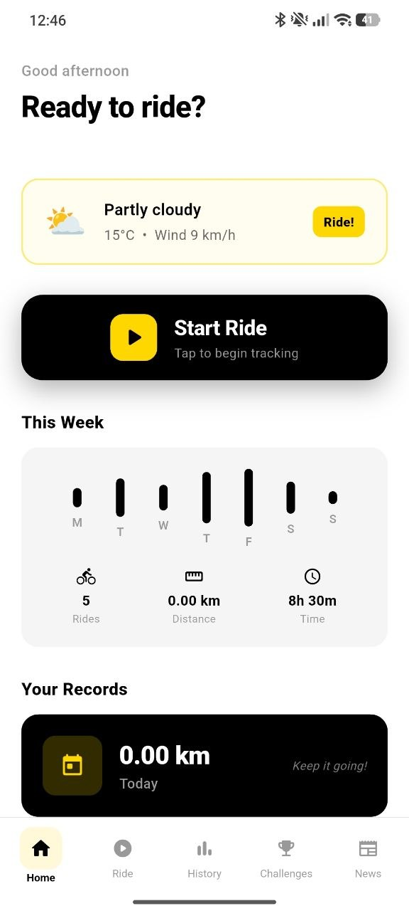
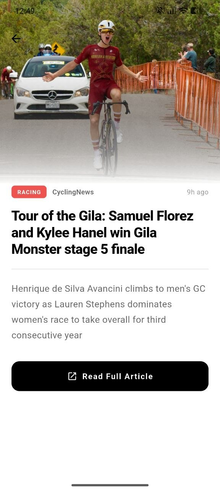

Start Ride
Begin tracking instantly with a clear ride button and ride-ready dashboard.
Mlb Cycling Pulse helps cyclists start rides, follow weekly progress, complete challenges, view ride history, and stay connected with cycling news in one smooth mobile experience.

The app gives you a simple launch point: weather, weekly activity, current records, daily challenges and cycling news. Everything is fast, clear and built around action.
A powerful landing page for a cycling app should feel fast, energetic and premium — exactly like the ride experience itself.
Begin tracking instantly with a clear ride button and ride-ready dashboard.
Review rides, distance and time with clean weekly visual blocks.
Complete daily and weekly goals like Ride 10 km Today or Speed Warrior.
Follow cycling headlines directly inside the app with full article previews.
Track speed, average speed, max speed and distance in a focused dark ride UI.
See conditions before the ride, including temperature and wind information.
The carousel shows the app experience in a premium way instead of a cheap static screenshot grid.
When the ride starts, the app switches into a distraction-free mode with speed, time, distance and a large central action button.
Daily streaks, weekly goals and reward points help users build a stronger cycling habit and track progress over time.
3 days in a row
Complete a 10 km ride today
Maintain average speed over 20 km/h
The site also presents the app’s cycling news feature with cards, article previews and high-impact imagery.
Follow major cycling headlines and fresh updates inside the app.
Open cycling stories with large images and clean typography.

Stay updated with the cycling world before your next ride.
Download Mlb Cycling Pulse and turn every ride into clear progress, better habits and a stronger cycling routine.
Download on Google Play →